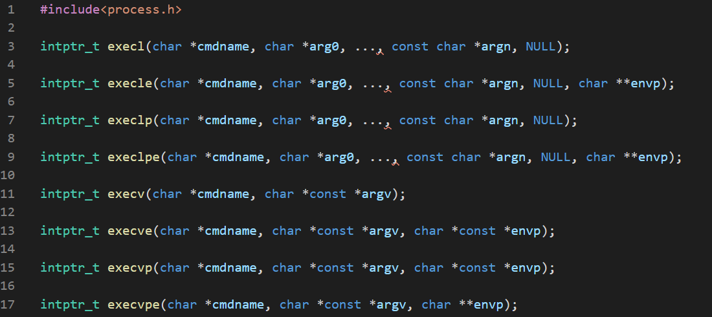

Windows has some very complex, highly parameterized, heavy functions for creating processes. But there are a few which is similar to the linux ones.

This function name suffixes and return types are similar to unix.
Now we'll write a program to find the path variable from the environment.